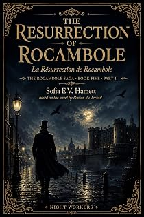

La Résurrection de Rocambole
Book Five · Part II
by Pierre-Alexis Ponson du Terrail · translated by Sofia E. V. Hamettpar Pierre-Alexis Ponson du Terrail · traduit par Sofia E. V. Hamett
The bookLe livre
Agénor de Morlux leaves Antoinette on her doorstep at six with a promise of tomorrow, and two hours later he is on the road to Brittany. The explanation involves his uncle Karle, a lawyer named Timoléon, and a plan too carefully laid to be spoilt by a young man's infatuation. Rocambole, returned from the galleys, has decided to spend the rest of his life undoing men like these.
Agénor de Morlux quitte Antoinette sur son seuil à six heures en lui promettant « à demain », et deux heures plus tard il est sur la route de Bretagne. L'explication met en jeu son oncle Karle, un homme de loi nommé Timoléon, et un plan trop soigneusement monté pour qu'un béguin de jeune homme le dérange. Rocambole, revenu du bagne, a décidé de consacrer le reste de sa vie à défaire des hommes de cette espèce.
From the opening pagesLes premières pages
How was it that Monsieur Agénor de Morlux, whom we left at six that evening leaving Antoinette on her doorstep with a promise of "Tomorrow, then!", had left for Brittany two hours later? Here is the explanation.
Viscount Karle de Morlux had laid his plans beautifully, working hand in hand with Maître Timoléon, and he was not a man to let some careless oversight wreck the game he was playing. Having arranged for Antoinette to disappear, it would have been the height of folly to leave Agénor in Paris, since anyone alarmed by her disappearance would inevitably come running to him.
Agénor made a habit of going up to his rooms every day around six, either to dress before dining at his club or to collect his letters. That day he had done as usual, going straight to Rue de Surène after leaving Antoinette. At his front door he was rather surprised to see his uncle Karle's two-horse phaeton waiting. One of the grooms told him:
"The Viscount is waiting for the Baron upstairs."
Agénor's heart skipped. He climbed the stairs quickly and reached the mezzanine, where his bachelor apartment was. Viscount Karle de Morlux was waiting for his nephew by the fire in the smoking room, a cigar between his lips, looking as though he were still thirty.
"Well, young lover," he said as Agénor came in, "you weren't expecting to find me here, were you?"
"No, Uncle."
"And you don't know what's brought me?"
"No, Uncle."
"I've come to talk to you about marriage."
Agénor blushed.
"So my father told you everything?"
"Yes," Karle answered, "and I'm delighted."
"About my marriage?"
"About your intention to marry, at any rate. Once you're settled, your father and I can rest easy and stop worrying that you'll marry some scandalous young woman who'd bring you nothing but disgrace."
"Oh, Uncle," said the smitten Agénor, "if you knew how pretty she is."
"All the better!"
"And clever..."
"Better still!"
"So you approve?"
"Completely. Haven't I already proven it?"
"How do you mean?" asked Agénor, wide-eyed.
"You saw your father today, didn't you?"
"Of course."
"And he must have told you I'd already looked into your Antoinette's protégé... Milon."
"Ah, that's right, forgive me, dear uncle, I'm a bit scattered these days... But actually, I think you were given bad information."
"Oh?" said Monsieur de Morlux, giving a start.
"Yes, Uncle... I don't believe you'll need to petition for Milon's pardon after all..."
"Excuse me?"
"Picture this," Agénor went on eagerly, "I saw Mademoiselle Antoinette tonight, quite by chance, I ran into her, and while we were talking she cried out and pointed at a man in a carriage. It was Milon!"
Karle de Morlux jumped in his seat, but Agénor didn't notice and kept talking.
"Mademoiselle Antoinette and I got into her carriage and followed his, but we couldn't catch up, and in the end we lost him."
Karle de Morlux breathed again. For a moment, while his nephew was talking, he had thought everything was ruined. Milon in Paris, finding Antoinette again, introduced to his nephew — that would have destroyed his entire scheme, especially given that behind Milon stood a man Timoléon had mentioned, one who went by the name Rocambole.
"But," Agénor continued, while Monsieur de Morlux, briefly rattled, recovered his usual composure, "we'll find him again, don't worry. Paris isn't so big for a Parisian like me."
"What you're telling me is quite extraordinary," Karle said calmly, studying his nephew.
"Why is that, Uncle?"
"Two reasons. If the person you saw really was this Milon, how did he get to Paris?"
"Maybe he escaped."
"Then why hasn't the prison administration heard anything about it?"
That argument threw Agénor off a little.
"Your Antoinette," said Karle de Morlux, "must have been fooled by one of those uncanny resemblances that really do happen."
"You're probably right, Uncle."
"In any case," Monsieur de Morlux continued, "that's something you can look into when you get back."
"Get back? What do you mean, Uncle?"
The Viscount began to laugh.
"You didn't think," he said, "that I came here to congratulate you on your engagement plans."
"But, Uncle..."
"I came to talk business. Very important business."
Agénor frowned. Monsieur de Morlux drew out his watch.
"You leave for Rennes at eight forty-five."
"You're out of your mind, Uncle!"
"You'll be there tomorrow," Monsieur de Morlux went on coolly, "you'll spend the evening and the following morning with your maternal grandmother, who absolutely must see you, and you'll be back the day after that. Your Antoinette won't die from going sixty hours without seeing you."
"But honestly, Uncle," said Agénor, "this rushed trip seems insane."
"Maybe so, but it's sensible. Your grandmother is ill, gravely ill. She's written to your father saying she wants to see you. There's an inheritance at stake. Don't be a child about it."
"Still, Uncle, surely I can put the trip off."
"Not even by a day. Believe me, I won't say more than that. Go see your grandmother, come back, and in a fortnight you'll marry Antoinette. Does that suit you?"
"But... Uncle... I should at least write to my father."
"Your father already knows. Now," Karle de Morlux finished, "once you're in Rennes, you'll see that your father and I were right. Your grandmother is at death's door, and since she already can't stand your father, she's quite capable of disinheriting him."
"Very well," said Agénor, "I'll go. But will you at least let me write to Antoinette?"
"Oh, whatever you like."
Agénor sat down at his desk and wrote the young woman a long letter, while Karle de Morlux calculated that if it went through the post, it wouldn't arrive before the next morning. But once Agénor had sealed it, he rang for his valet to take it.
"No," said Monsieur de Morlux, "I'll see to it."
"You will, Uncle?"
"I'll deliver it myself tomorrow morning. It'll give me a good excuse to meet your bride-to-be."
"Oh, Uncle, how kind you are!"
And Agénor set about dressing for the journey while his valet packed his trunks.
An hour later, the building's concierge was riding in a cab, taking the trunks to the train station, while Karle de Morlux offered his nephew a seat in his phaeton. Agénor hadn't eaten. Karle de Morlux took him to the station buffet, got a glass of Bordeaux and a chicken wing into him, and didn't relax until he'd seen his handsome nephew safely aboard the train. The whistle blew, and the train pulled out.
Then Monsieur de Morlux climbed back into his phaeton and went home to Rue de la Pépinière, where Maître Timoléon had been waiting for over an hour. Like everyone in his line of work, the former police spy had a gift for disguise so thorough it made him unrecognizable. He had presented himself at Monsieur de Morlux's house dressed as a perfect English gentleman, announcing himself as a lord back from the West Indies and a close friend of the Viscount.
"Well?" Monsieur de Morlux asked, finding him settled in the drawing room.
Timoléon checked his watch. It read half past nine.
"It should be done by now," he said, "but if you like, we can go make sure."
The excerpt ends here — about 1,212 words of the published edition.L'extrait s'arrête ici — environ 1,212 mots de l’édition parue.
KindleHardcoverReliéContextContexte
Rocambole is the reason French has the word rocambolesque. Ponson du Terrail wrote him across nineteen volumes between 1857 and 1870 — a child of the Paris underworld who becomes a criminal prince, is broken, sent to the galleys, and returns as an avenger. He was the most widely read character of his century and the direct ancestor of every serial anti-hero since, Arsène Lupin included. English readers have never had him whole: a few volumes were translated in the 1860s and then abandoned. This is the first complete English Rocambole.
Rocambole est la raison pour laquelle le français possède le mot rocambolesque. Ponson du Terrail l'a écrit sur dix-neuf volumes entre 1857 et 1870 — enfant des bas-fonds parisiens devenu prince du crime, brisé, envoyé au bagne, puis revenu en justicier. Il fut le personnage le plus lu de son siècle et l'ancêtre direct de tous les anti-héros de feuilleton, Arsène Lupin compris. Le lectorat anglophone ne l'a jamais eu en entier : quelques volumes furent traduits dans les années 1860, puis abandonnés. Voici le premier Rocambole intégral en anglais.
The whole programmeTout le programme